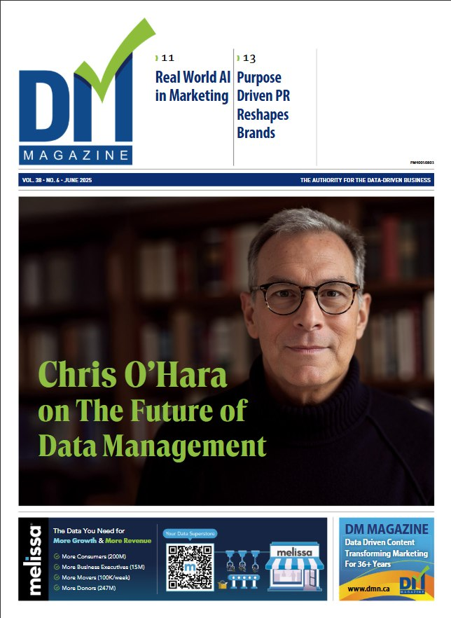

Keynotes, panels, podcasts, webinars, and thought leadership

Cover feature in DM Magazine, Canada's authority for the data-driven business. In-depth interview on the evolution of customer data, CDPs, data fabric, and agentic AI.
In-depth alumni profile on helping companies ethically navigate digital marketing and consumer data at Salesforce. Covers third-party cookies, FLoC, GDPR, facial recognition, and the balance between personalization and privacy.
Practical applications of AI tools to enhance productivity and go-to-market strategy.
How first-party data strategies, modern data fabric, and AI are reshaping personalization in a privacy-first world.
Connecting the backend of enterprise to the frontend of Customer Experience.
Lessons from the front lines of marketing technology transformation.
Conference keynotes, panel discussions, and video interviews on marketing technology, data management, and customer experience.
"Grow Your Business Through Enterprise-Wide Customer Centricity" — Learn how to put customers at the heart of your intelligent enterprise and facilitate experiences that drive lifetime value. Covers enterprise-wide customer data foundation, bridging organizational silos, and enabling real-time customer insights.
Video no longer available on SAP.comDiscussion with Ryan Joe about Salesforce's acquisition of Krux and how Salesforce is thinking about artificial intelligence, the role of data management, and applications for better marketing.
Watch on YouTubePanel discussion exploring the future of digital marketing hubs at NYC's Programmatic I/O event, featuring speakers from Krux, Oracle, and Rocket Fuel.
Watch on YouTubeInterview about Salesforce's "fourth industrial revolution" driven by data, AI, and IoT. Discusses ExactTarget Marketing Cloud integration, Krux/Salesforce DMP, Einstein Segmentation, MuleSoft, and Datorama acquisitions.
Watch on Beet.TVPanel discussion on programmatic video at the ICOM Global Summit in Seville.
Watch on YouTubeExploring the possibilities of using mobile location and beacon data to better segment, target, and analyze consumers. Featuring FreckleIOT, Ticketmaster/Live Nation, and PlaceIQ.
Video no longer availableCo-presented with Katie Coghlan of LiveRamp. A comprehensive primer on user match rates—covering both the basics and subtleties of identity on the Internet.
Video no longer availableIn-depth conversations about data management, CDPs, marketing technology, and industry insights.
In-depth conversation covering the evolution from DMPs to CDPs to data fabric, the future of AdTech, agentic AI, and why customer data is the atomic unit of enterprise intelligence. Companion to the DM Magazine cover story.
Listen NowHosts Martin Kihn and Jill Gray follow Chris through his colorful career spanning Traffiq, Bionic Ads, Nielsen, nPario, and Krux (acquired by Salesforce in 2016). Discusses the dot-com boom, perfecting writing and pitching voice, the third-party cookie breakup, and earning ad tech pedigree.
Listen NowJoining hosts Martin Kihn and Tina Rozul to discuss all things CDP (Customer Data Platform) on the popular Marketing Cloud podcast.
The authors of "Customer Data Platforms" join Russ Artzt (Executive Chairman of RingLead, Co-founder of Computer Associates) to discuss CDPs and the new book. Hosted by Jaime Muirhead.
Listen NowGreat conversation about Customer Data Platforms with co-author Martin Kihn, hosted by Vala Afshar and Ray Wang. Segment starts at 22:33.
Educational webinars and virtual events on data strategy, CDP implementation, and the future of marketing technology.
Featuring co-author Martin Kihn and Art Sebastian (Head of Digital, Casey's) discussing CDPs and their impact on personalization.
Recording no longer availableConversation about CDPs, DMPs, data quality, orchestration, and the future of data with Russ Artzt (Executive Chairman of RingLead, Co-founder of Computer Associates).
Watch On-DemandDiscussion on how agencies are coping with the new data-driven landscape as marketers increasingly take ownership of their own data. Featuring speakers from L'Oreal, Mediavest|Spark, and Krux.
Recording no longer availableGrowing Your Business Through Enterprise-Wide Customer Centricity — London
Presentation on Krux integration with Salesforce Marketing Cloud, Einstein AI and data management capabilities (December 2016)
Multiple sessions on data strategy, CDP implementation, and marketing cloud
Interview and panels on Salesforce acquisitions and AI strategy — Cologne, Germany
Multiple panels on identity, data management, and programmatic advertising — NYC
Programmatic video panel discussion — Seville, Spain
Deep dive into data management topics
Marketing clouds and the future of martech stacks
Best Practices in Display Advertising, Data Management, Programmatic Marketing, Mobile Display, Programmatic Branding, and The Role of the Agency in Data Management
I'm available for keynotes, panels, podcasts, and workshops on data strategy, CDPs, AI in marketing, and the future of marketing technology.
Get in TouchFeatured appearances, awards, and published writing across broadcast, print, and digital media.
Featured appearance discussing food and drink books.
Author interview and segment on culinary topics.
Featured expert on food and beverage culture.
"Data Driven: Harnessing Data and AI to Reinvent Customer Engagement" (McGraw Hill) — Co-authored with Tom Chavez and Vivek Vaidya.
Read Press Release"Customer Data Platforms: Use People Data to Transform the Future of Marketing Engagement" (Wiley) — Co-authored with Martin Kihn.
"Great American Beer" named #1 on Esquire's prestigious list celebrating American culture and craftsmanship.
Longtime contributor with 40+ columns on customer data strategy, programmatic media, AI, identity, and marketing technology transformation.
View All ArticlesAuthor of feature articles and five comprehensive whitepapers including "Best Practices in Data Management," "Programmatic Marketing," and "The Role of the Agency in Data Management."
View Author PageContributing author on customer data solutions, enterprise CX strategy, and data-driven marketing.
View Author PageProduct marketing thought leadership on Marketing Cloud, CDPs, data management, and AI applications.
View Author PageFeatured expert and author across business and lifestyle publications.